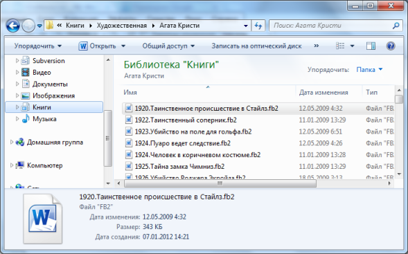
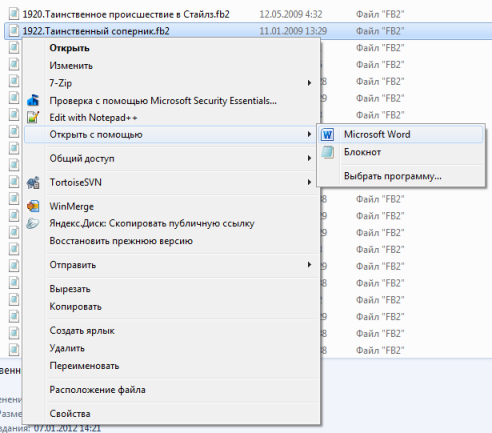
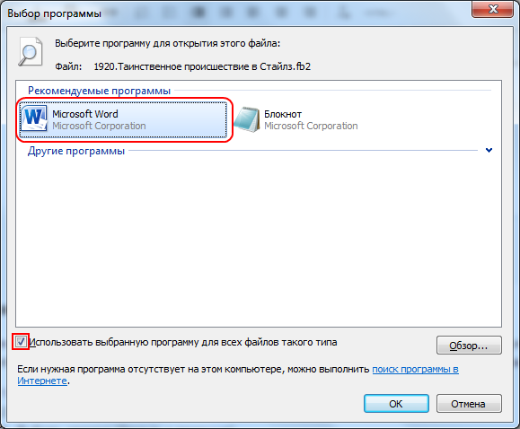

После установки программы FB2 Word Viewer файлы fb2 можно открыть из проводника:

Для этого в проводнике нужно выбрать fb2 файл и открыть его двойным щелчком.
Если же до установки FB2 Word Viewer файлы fb2 открывались двойным щелчком в другой программе, то после установки установки FB2 Word Viewer эта возможность останется. Для того, чтобы открыть fb2 файл в Microsoft Word нужно:

В открывшемся диалоге нужно:

В результате fb2 файл будет открыт в Microsoft Word и в последующем все fb2 файлы будут открываться в Microsoft Word по двойному щелчку.
Подписаться на рассылку новинок и новостей